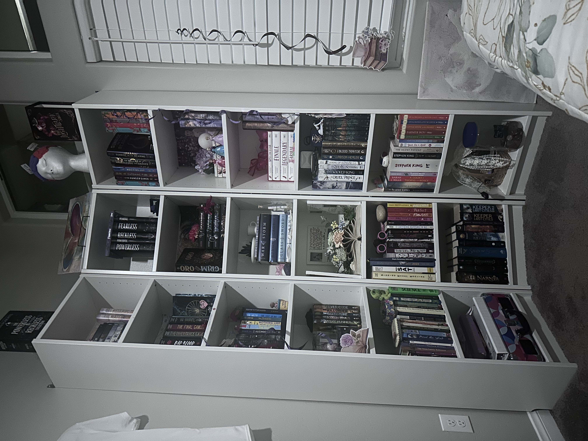
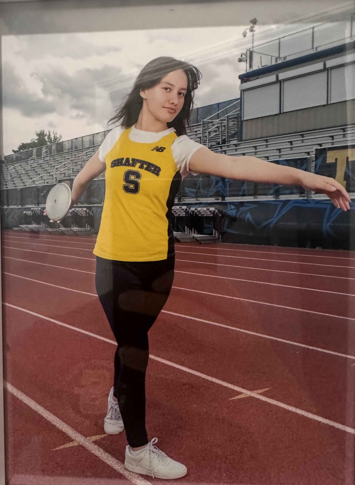
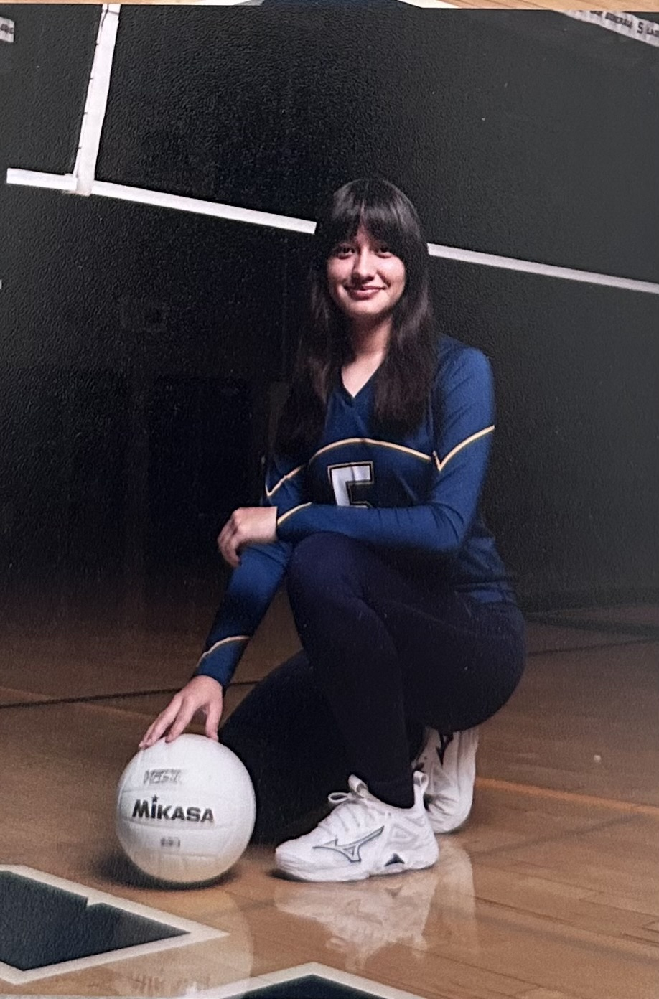
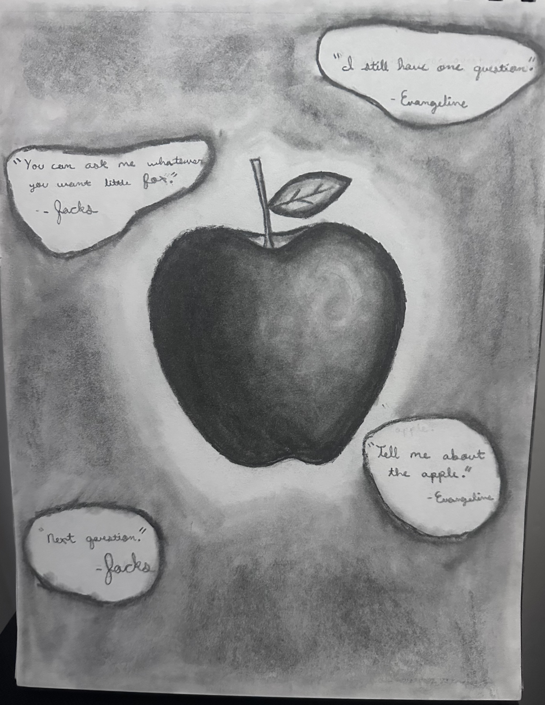
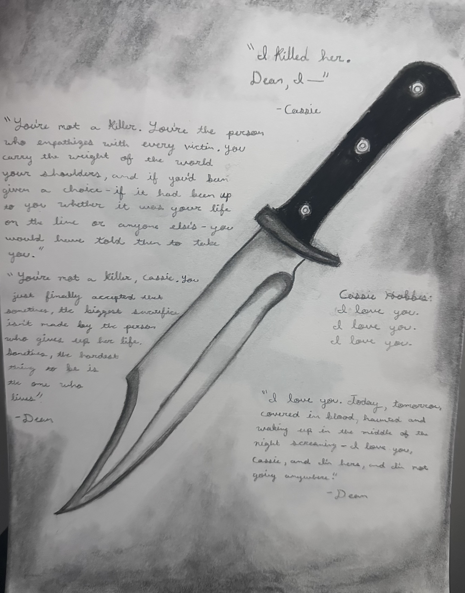
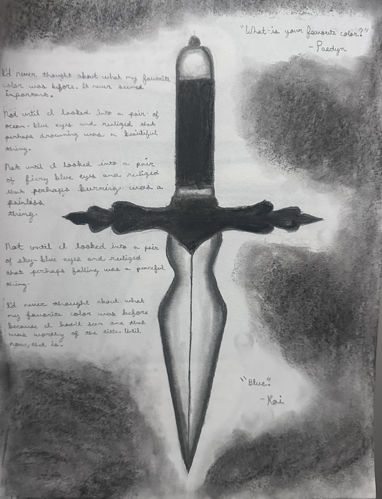

Gabriella Gonzalez's About Me Webpage
Hi my name is Gabriella Faith Gonzalez, but I perfer to be called Gabby.
Currently in my 17 years of life my hobbies include:
Reading:

Sports:


Charcoal Drawing:



Fun Facts:
- I am the biggest LA Dodgers fan, and I go to the Dodger's Fourth of July Game every year. My favorite player is first basemen Freddy Freedmen.
- I have read a minium of two book series in a week.
- I have played softball, basketball, soccer, track, tennis, and volleyball. However in highschool I only did track and volleyball.
- I have had a 4.00 unweighted gpa since the 6th grade.
- I have read a minimium of two book series in a week.
- I have two sisters: Amber is 14 years old and Leslie is 29 years old.
- I have never broken a bone, but in July of my senior year I completly tore my acl.
- My favorite color is prewinkle and scarlet red.
Dreams:
My dream is to become a professional author. I fell in love with reading when I was 11 when I read the Heartland Series by Lauren Brooke. I was a late bloomer when it came to reading. My reading level was so low that I had to go to intervention. I now, however, have almost 200 books on my bookself. I also dream of becoming a millionaire but we will see how that goes.